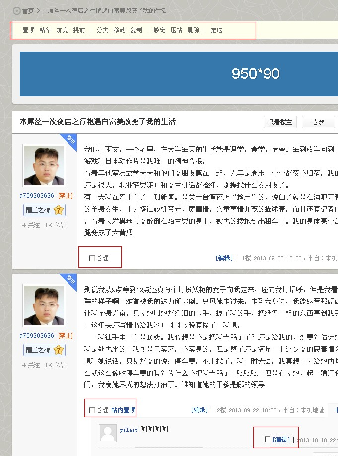
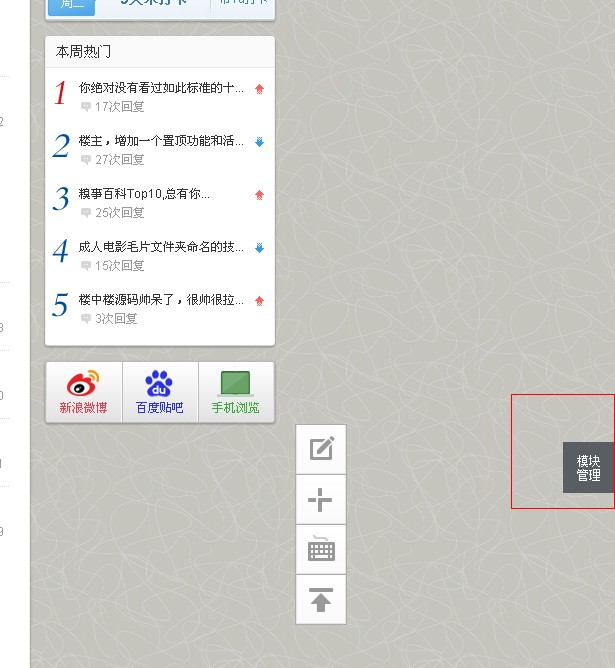

==========谈谈使用楼中楼做网站的未来发展=========
楼中楼是社区网站系统，社区一般比文章网站（如DEDE）更难做，需要花很多时间与网友互动。
如果仅仅以赚钱为目的，那么社区真的是一个错误的选择，你不能热爱社区的话题，真诚的与网友互动，社区就没有凝聚力。
靠社区赚钱的网站很少，在pw8.7时代“地方站”很火，很多站长都做过但成功的不多。
我上面想表达什么？就是想说用楼中楼适合做感兴趣的网站，而不是单纯以赚钱为目的的网站。
如果你做了这样一个社区，认识了很多朋友，大家一起交流自己的独立观点，这将会是很有意义的，说不定会改变些什么。
我经常去http://ourcoders.com程序员交流网站，网站没有所谓花式的功能，就是单纯的交流，大家可以认真看看。
==========最后坦白：我是一个失败站长=========
“个人站长时代已经过去”这句话大家应该都听说过，或者已经深有体会。
我以前不相信这句话，然后坚持做网站，结果真的是没有得到回报，虽然当站长的资金投入少，但是时间与精力都没有了。
如今我已经精疲力竭，目前只想把互联网当做兴趣，接下来的几年时间沉淀自己。
如果大家对互联网也有自己的看法，欢迎大家加群一起来交流经验，做个朋友吧。
输入example.com/admin.php进入后台，再输入管理员账号就可以进后台了。
把每一个选项都点击一下，然后看选项说明，百度搜索，后台就熟悉了。
是真的要把每一个选项都点击一下，不是开玩笑的说。
使用管理员账号在前台登陆后，可以进行用户与帖子的管理。

tip：如果你对PW9系统不熟悉，在使用过程中肯定会遇到问题，所以要解决问题而不是怀疑系统
∷门户开发教程：http://www.phpwind.net/tag/%E9%97%A8%E6%…
∷风格模板目录了解：http://www.phpwind.net/read/2768519
∷ PW9.0前端JS开发宝典：http://www.phpwind.net/tag/js%E5%AE%9D%…
∷phpwind9.0模板开发手册：http://www.phpwind.net/read/2908001
∷phpwind9.0前端API：http://wiki.open.phpwind.com/windapi/
∷ pw9开发自已的CMS模块：http://www.phpwind.net/read/2963853
∷ phpwind9技术文档：http://wiki.open.phpwind.com/
∷魅柒教程插件开发：http://www.phpwind.net/tag/%E9%AD%8…
∷phpwind9-应用开发浅尝 ：http://www.phpwind.net/read/2735999
没有基础这个不是重点，互联网是知识的海洋，能学多少在于你的求知欲。
知乎上有一句名言：“种一棵树最好的时间是十年前，其次是现在。”如果你想成为大神什么时候都不晚，但是越早越好。
关于天赋也有一句话：“大部分人努力程度之低，根本谈不上拼天赋。”
我一向不喜欢拿天赋来说事，做个破网站不要什么天赋，有天赋去艺术创作吧。
总之就是保持兴趣，善于自主学习，用心投入，经过时间的沉淀，你就成为大神了。
为什么要成为大神？因为我们要有工匠精神，当你做一件事情时，就应该全身心的投入，做到能力范围内的最好。
日本有一部纪录片《寿司之神》讲述86岁的小野二郎如何用心做一辈子的寿司，这就是工匠精神。
就目前中国的环境与工匠精神是矛盾的，所谓的成功学使我们变得更加浮躁，所以多多思悟吧！
说明：此文档有着浓厚的个人观点，语无伦次的表述，因为我是临时工，讲错了不负责，哈哈。
tip：当以上FAQ都无法解决你的问题时，请去【关于】页面联系我们吧。